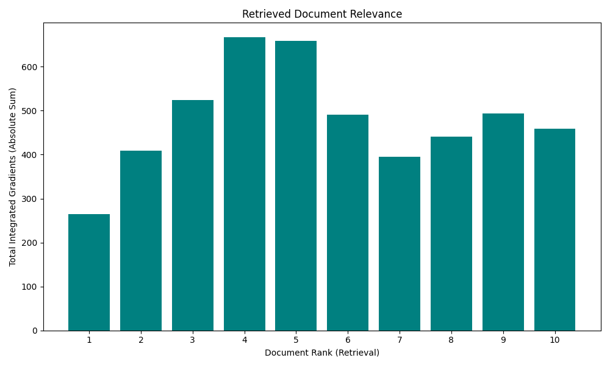
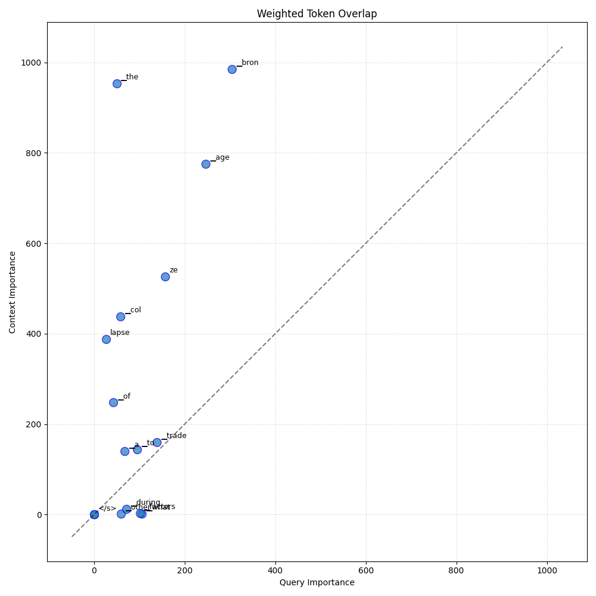
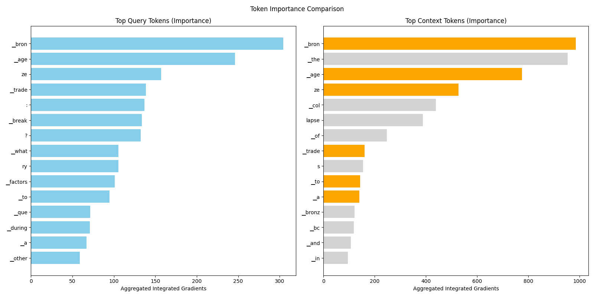

← Back to Global Report
Analysis: query_34_6
Query:
▁que ry : ▁What ▁other ▁factors ▁led ▁to ▁a ▁break down ▁of ▁trade ▁during ▁the ▁Bron ze ▁Age ▁col lapse ?
Document Relevance

Weighted Overlap

Token Comparison

Documents
Document 1 (Click to Expand)
▁There ▁also ▁appears ▁to ▁have ▁been ▁a ▁col lapse ▁in ▁the ▁bronz e ▁trade ▁during ▁the ▁early ▁Iron ▁Age ▁which ▁can ▁be ▁view ed ▁in ▁three ▁ways